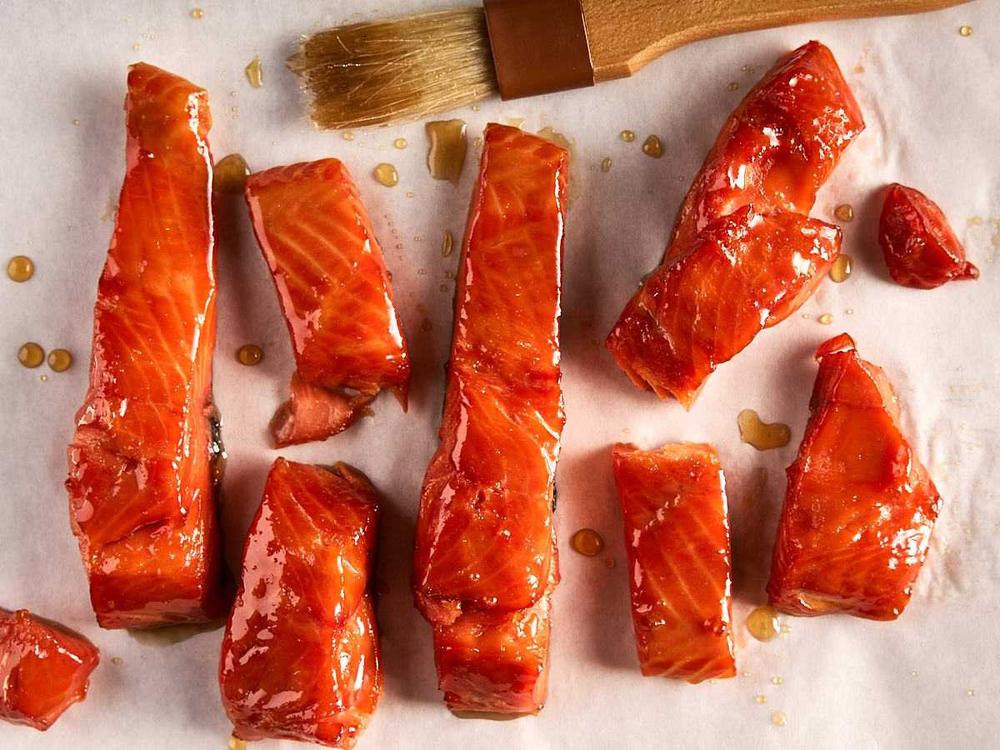

Salmon Candy

How to Make Salmon Candy:
Alright, pals, let's dive into the magical world of salmon candy!
- Let's start with the salmon – the star of this coastal delight. No need to fuss with deep-frying here. We're keeping it simple with a marinade that sings with sweet and savory notes. Think maple syrup, soy sauce, and a hint of spice for that extra kick. Let it soak up all that goodness before hitting the smoker.
- Now, onto the smoking process. We're talking slow and low, my friends. Let that salmon bathe in the smoky embrace until it's perfectly tender and oh-so-caramelized. It's a labor of love, but trust me, the payoff is worth every savory moment.
- Time to savor the fruits of your labor. Serve up those glistening strips of salmon candy on a platter, ready to tantalize taste buds and ignite culinary conversations. It's a taste of the Pacific Northwest you won't soon forget.
- Take a moment to revel in your culinary triumph. Let the flavors dance on your palate as you indulge in the rich, smoky goodness of Vancouver's finest. Here's to embracing coastal cuisine in all its delicious glory!
Ingredients
- Salmon fillets
- Maple syrup
- Soy sauce
- Spices (such as black pepper, garlic powder, and paprika)
Tools You’ll Need:
- Smoker
- Basting brush
- Sharp knife
- Cutting board
<-Back to home